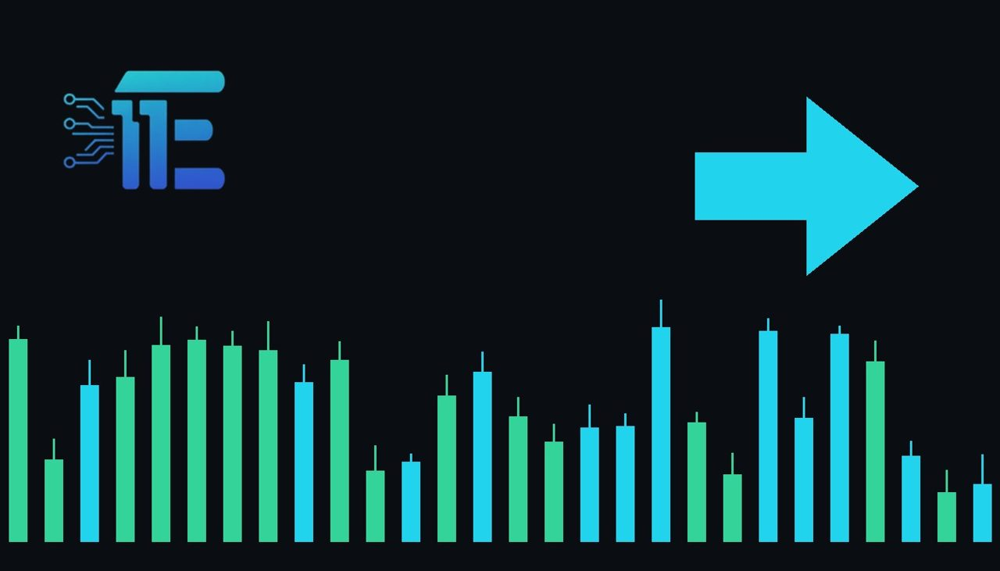

Gold Holds Near $3,950 as Peace Hopes Ease Oilមាសរក្សាផ្ទះជិត 3,950 ដុល្លារ ខណៈក្តីសង្ឃឹមសន្តិភាពធ្វើឱ្យប្រេងធូរស្រាល
XAU/USD impact: ◆ Mixedផលប៉ះពាល់លើ XAU/USD: ◆ ចម្រុះ

Gold stayed above $3,950 an ounce following optimism over peace talks and upcoming elections. This shift in energy-driven inflation pressures directly impacts safe-haven demand.
តម្លៃមាសបានស្ថិតនៅខាងលើ 3,950 ដុល្លារក្នុងមួយអោន បន្ទាប់ពីមានសុទិដ្ឋិនិយមលើកិច្ចចរចាសន្តិភាព និងការបោះឆ្នោតខាងមុខ។ ការផ្លាស់ប្តូរនេះប៉ះពាល់ផ្ទាល់ដល់តម្រូវការទ្រព្យសុវត្ថិភាព។
Gold prices maintained a position above $3,950 an ounce on Tuesday, following their largest daily gain in two months. The stabilization comes as hopes for progress in peace negotiations involving the U.S. and Iran helped ease energy-driven inflation concerns across the wider market.
តម្លៃមាសបានរក្សាទីតាំងនៅខាងលើ 3,950 ដុល្លារក្នុងមួយអោនកាលពីថ្ងៃអង្គារ បន្ទាប់ពីការកើនឡើងប្រចាំថ្ងៃដ៏ធំបំផុតក្នុងរយៈពេលពីរខែ។ ការស្ងប់ស្ងាត់នេះកើតឡើងស្របពេលដែលក្តីសង្ឃឹមនៃការរីកចម្រើនក្នុងការចរចាសន្តិភាពរវាង សហរដ្ឋអាមេរិក និង អ៊ីរ៉ង់ បានជួយកាត់បន្ថយការព្រួយបារម្ភអំពីអតិផរណាដែលជំរុញដោយថាមពលទូទាំងទីផ្សារ។
At the same time, investors turned their attention toward the U.S. midterm elections, watching for potential shifts in the broader political and economic landscape. These developments influence market sentiment regarding government spending, fiscal policies, and overall economic direction.
ទន្ទឹមនឹងនេះ អ្នកជួញដូរបានបង្វែរការយកចិត្តទុកដាក់ឆ្ពោះទៅរកការបោះឆ្នោតពាក់កណ្តាលអាណត្តិរបស់ សហរដ្ឋអាមេរិក ដោយរង់ចាំមើលការផ្លាស់ប្តូរដែលអាចកើតមាននៅក្នុងទិដ្ឋភាពនយោបាយ និងសេដ្ឋកិច្ចទូ ការវិវត្តទាំងនេះមានឥទ្ធិពលលើអារម្មណ៍ទីផ្សារទាក់ទងនឹងការចំណាយរបស់រដ្ឋាភិបាល គោលនយោបាយសារពើពន្ធ និងទិសដៅសេដ្ឋកិច្ច.
The transmission channel to XAU/USD operates primarily through inflation expectations and safe-haven demand. When geopolitical tensions and energy costs ease, the urgency for safe-haven assets typically diminishes, while receding inflation pressures can alter real yield expectations for the U.S. dollar.
ច្រកបញ្ជូនទៅកាន់ XAU/USDដំណើរការជាចម្បងតាមរយៈការរំពឹងទុកអតិផរណា និងតម្រូវការទ្រព្យសុវត្ថិភាព។ និងថ្លៃថាមពលធូរស្រាល តម្រូវការបន្ទាន់សម្រាប់ទ្រព្យសុវត្ថិភាពជាទូទៅថយចុះ ខណៈដែលសម្ពាធអតិផរណាចុះខ្សោយអាចផ្លាស់ប្តូរការរំពឹងទុកទិន្នផលពិតប្រាកដសម្រាប់ ដុល្លារអាមេរិក។
A supportive environment for gold generally emerges if geopolitical risks resurface or if election uncertainties boost demand for defensive assets. Conversely, sustained progress in diplomatic talks and lower oil prices tend to pressure gold by reducing inflation hedging and safe-haven flows.
បរិយាកាសគាំទ្រដល់មាសជាទូះទៅកើតឡើងប្រសិនបើហានិភ័យភូមិសាស្ត្រនយោបាយកើតមានឡើងវិញ ឬប្រសិនបើភាពមិនប្រាកដប្រជានៃការបោះឆ្នោតជំរុញតម្រូវការទ្រព្យការពារ។ ផ្ទុយទៅវិញ វឌ្ឍនភាពដែលគាំទ្រក្នុងកិច្ចចរចាការទូត និងតម្លៃប្រេងទាបមាននិន្នាការដាក់សម្ពាធលើមាសតាមរយៈការកាត់បន្ថយការការពារអតិផរណា និងលំហូរទ្រព្យសុវត្ថិភាព។
Traders should monitor ongoing diplomatic updates concerning energy supply routes, the outcome and market reaction surrounding the U.S. midterm elections, and broader movements in the U.S. dollar and Treasury yields.
អ្នកជួញដូរគួរតែតាមដានបច្ចុប្បន្នភាពការទូតដែលកំពុងបន្តទាក់ទងនឹងច្រកផ្គត់ផ្គង់ថាមពល លទ្ធផល និងប្រតិកម្មទីផ្សារជុំវិញការបោះឆ្នោតពាក់កណ្តាលអាណត្តិរបស់ សហរដ្ឋអាមេរិក និងចលនាក្នុង ដុល្លារអាមេរិក និងទិន្នផលប័ណ្ណបំណុល។
Key takeawaysចំណុចសំខាន់ៗ
- Gold held above $3,950 an ounce following recent gains.
- មាសបានរក្សាទុកខាងលើ 3,950 ដុល្លារក្នុងមួយអោនបន្ទាប់ពីការកើនឡើងថ្មីៗនេះ។
- Hopes for peace talks eased energy-driven inflation worries.
- ក្តីសង្ឃឹមសម្រាប់ការចរចាសន្តិភាពបានបន្ធូរបន្ថយការព្រួយបារម្ភអំពីអតិផរណាថាមពល។
- Investors are closely watching the U.S. midterm elections.
- អ្នកជួញដូរកំពុងតាមដានយ៉ាងដិតដល់នូវការបោះឆ្នោតពាក់កណ្តាលអាណត្តិរបស់ សហរដ្ឋអាមេរិក។
Original commentary by THE MARKET CODE, based on public reporting from Yahoo! Finance: GC=F News. Written with the help of AI. Educational only, not financial advice.
មតិវិភាគដើមដោយ THE MARKET CODE ផ្អែកលើការរាយការណ៍សាធារណៈពី Yahoo! Finance: GC=F News។ សរសេរដោយមានជំនួយពី AI។ មាតិកាអប់រំប៉ុណ្ណោះ មិនមែនជាដំបូន្មានហិរញ្ញវត្ថុទេ។